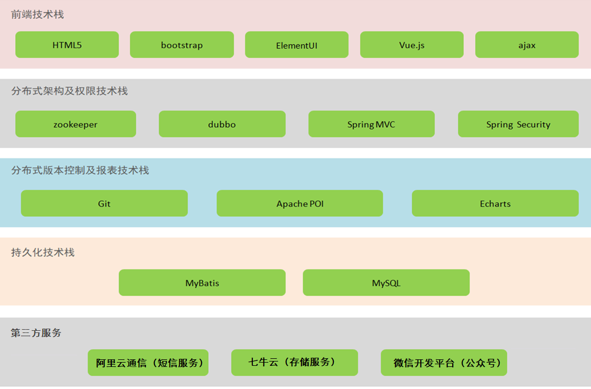
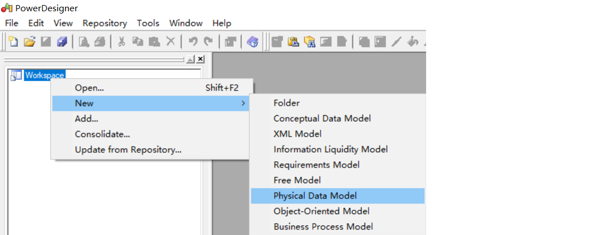
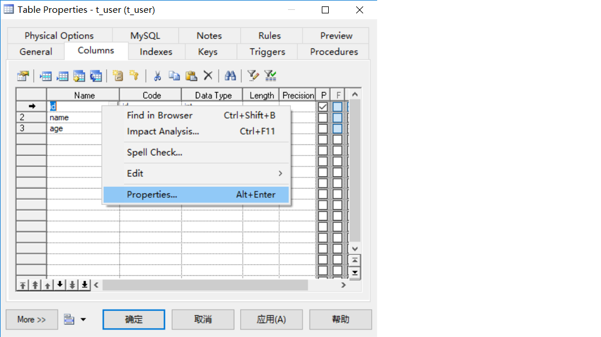
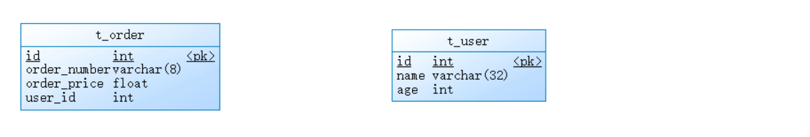
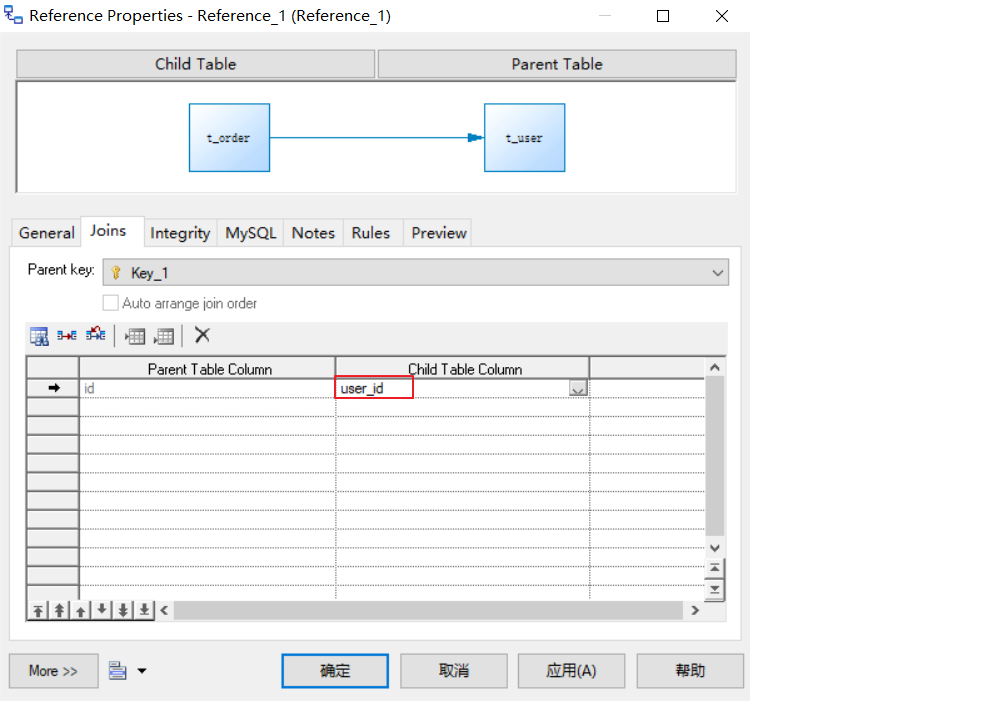
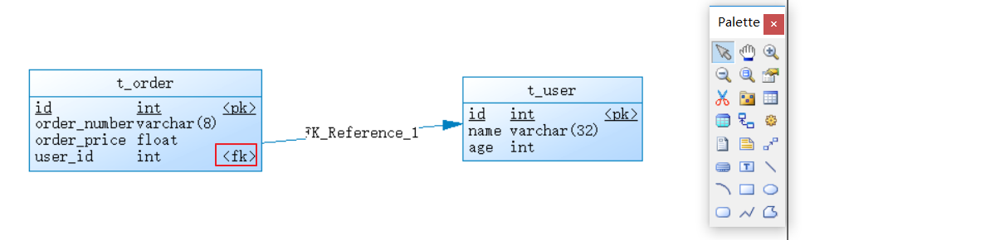
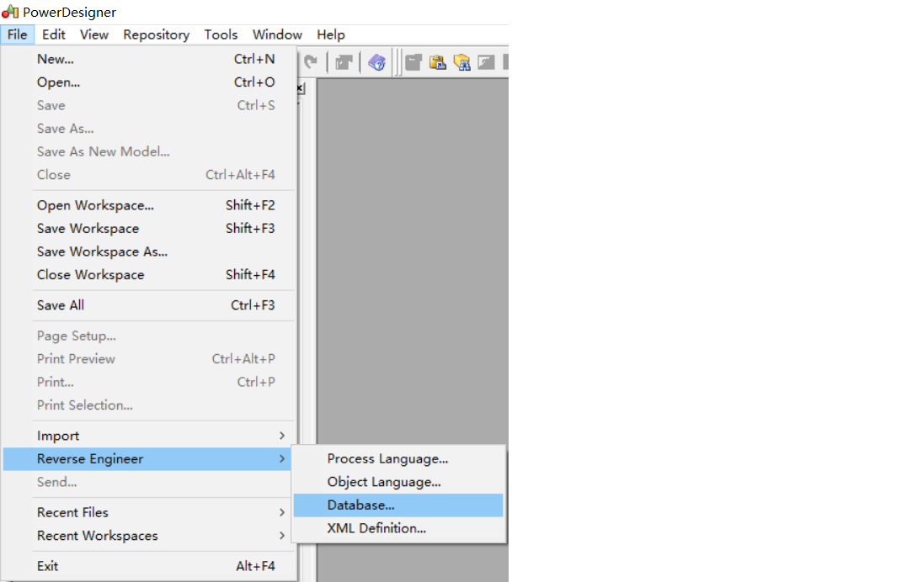
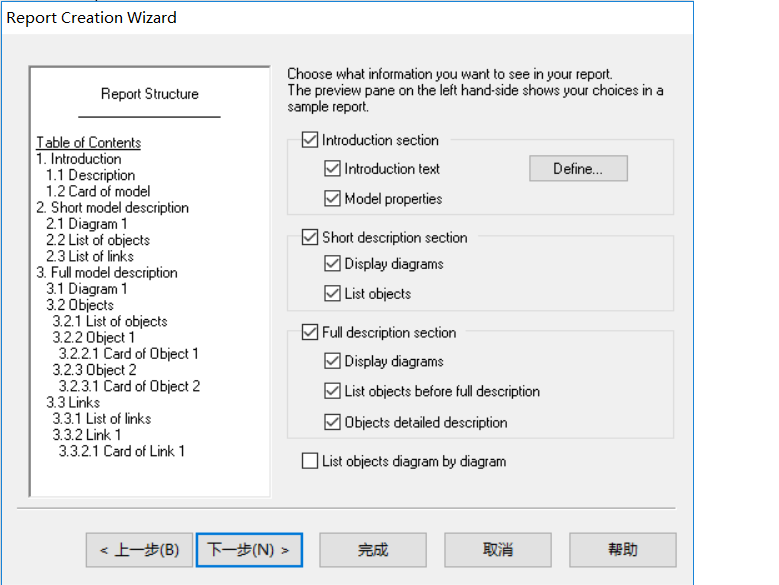

第1章 项目概述和环境搭建
1. 项目概述
1.1 项目介绍
传智健康管理系统是一款应用于健康管理机构的业务系统，实现健康管理机构工作内容可视化、会员管理专业化、健康评估数字化、健康干预流程化、知识库集成化，从而提高健康管理师的工作效率，加强与会员间的互动，增强管理者对健康管理机构运营情况的了解。
详见：资料中的传智健康PRD文档.docx
1.2 原型展示
参见资料中的静态原型。
1.3 技术架构

1.4 功能架构

1.5 软件开发流程
软件开发一般会经历如下几个阶段，整个过程是顺序展开，所以通常称为瀑布模型。

2. 环境搭建
2.1 项目结构
本项目采用maven分模块开发方式，即对整个项目拆分为几个maven工程，每个maven工程存放特定的一类代码，具体如下：

各模块职责定位：
health_parent：父工程，打包方式为pom，统一锁定依赖的版本，同时聚合其他子模块便于统一执行maven命令
health_common：通用模块，打包方式为jar，存放项目中使用到的一些工具类、实体类、返回结果和常量类
health_interface：打包方式为jar，存放服务接口
health_service_provider：Dubbo服务模块，打包方式为war，存放服务实现类、Dao接口、Mapper映射文件等，作为服务提供方，需要部署到tomcat运行
health_backend：传智健康管理后台，打包方式为war，作为Dubbo服务消费方，存放Controller、HTML页面、js、css、spring配置文件等，需要部署到tomcat运行
health_mobile：移动端前台，打包方式为war，作为Dubbo服务消费方，存放Controller、HTML页面、js、css、spring配置文件等，需要部署到tomcat运行
2.2 maven项目搭建
通过前面的项目功能架构图可以知道本项目分为传智健康管理后台和传智健康前台（微信端）
2.2.1 health_parent
创建health_parent，父工程，打包方式为pom，用于统一管理依赖版本
pom.xml
xxxxxxxxxx <project xmlns="http://maven.apache.org/POM/4.0.0" xmlns:xsi="http://www.w3.org/2001/XMLSchema-instance" xsi:schemaLocation="http://maven.apache.org/POM/4.0.0 http://maven.apache.org/xsd/maven-4.0.0.xsd"> <modelVersion>4.0.0</modelVersion> <groupId>com.itheima</groupId> <artifactId>health_parent</artifactId> <version>1.0-SNAPSHOT</version> <packaging>pom</packaging> <!-- 集中定义依赖版本号 --> <properties> <junit.version>4.12</junit.version> <spring.version>5.0.5.RELEASE</spring.version> <pagehelper.version>4.1.4</pagehelper.version> <servlet-api.version>2.5</servlet-api.version> <dubbo.version>2.6.0</dubbo.version> <zookeeper.version>3.4.7</zookeeper.version> <zkclient.version>0.1</zkclient.version> <mybatis.version>3.4.5</mybatis.version> <mybatis.spring.version>1.3.1</mybatis.spring.version> <mybatis.paginator.version>1.2.15</mybatis.paginator.version> <mysql.version>5.1.32</mysql.version> <druid.version>1.0.9</druid.version> <commons-fileupload.version>1.3.1</commons-fileupload.version> <spring.security.version>5.0.5.RELEASE</spring.security.version> <poi.version>3.14</poi.version> <jedis.version>2.9.0</jedis.version> <quartz.version>2.2.1</quartz.version> </properties> <!-- 依赖管理标签 必须加 --> <dependencyManagement> <dependencies> <!-- Spring --> <dependency> <groupId>org.springframework</groupId> <artifactId>spring-context</artifactId> <version>${spring.version}</version> </dependency> <dependency> <groupId>org.springframework</groupId> <artifactId>spring-beans</artifactId> <version>${spring.version}</version> </dependency> <dependency> <groupId>org.springframework</groupId> <artifactId>spring-web</artifactId> <version>${spring.version}</version> </dependency> <dependency> <groupId>org.springframework</groupId> <artifactId>spring-webmvc</artifactId> <version>${spring.version}</version> </dependency> <dependency> <groupId>org.springframework</groupId> <artifactId>spring-jdbc</artifactId> <version>${spring.version}</version> </dependency> <dependency> <groupId>org.springframework</groupId> <artifactId>spring-aspects</artifactId> <version>${spring.version}</version> </dependency> <dependency> <groupId>org.springframework</groupId> <artifactId>spring-jms</artifactId> <version>${spring.version}</version> </dependency> <dependency> <groupId>org.springframework</groupId> <artifactId>spring-context-support</artifactId> <version>${spring.version}</version> </dependency> <dependency> <groupId>org.springframework</groupId> <artifactId>spring-test</artifactId> <version>${spring.version}</version> </dependency> <!-- dubbo相关 --> <dependency> <groupId>com.alibaba</groupId> <artifactId>dubbo</artifactId> <version>${dubbo.version}</version> </dependency> <dependency> <groupId>org.apache.zookeeper</groupId> <artifactId>zookeeper</artifactId> <version>${zookeeper.version}</version> </dependency> <dependency> <groupId>com.github.sgroschupf</groupId> <artifactId>zkclient</artifactId> <version>${zkclient.version}</version> </dependency> <dependency> <groupId>junit</groupId> <artifactId>junit</artifactId> <version>4.12</version> </dependency> <dependency> <groupId>com.alibaba</groupId> <artifactId>fastjson</artifactId> <version>1.2.47</version> </dependency> <dependency> <groupId>javassist</groupId> <artifactId>javassist</artifactId> <version>3.12.1.GA</version> </dependency> <dependency> <groupId>commons-codec</groupId> <artifactId>commons-codec</artifactId> <version>1.10</version> </dependency> <dependency> <groupId>com.github.pagehelper</groupId> <artifactId>pagehelper</artifactId> <version>${pagehelper.version}</version> </dependency> <!-- Mybatis --> <dependency> <groupId>org.mybatis</groupId> <artifactId>mybatis</artifactId> <version>${mybatis.version}</version> </dependency> <dependency> <groupId>org.mybatis</groupId> <artifactId>mybatis-spring</artifactId> <version>${mybatis.spring.version}</version> </dependency> <dependency> <groupId>com.github.miemiedev</groupId> <artifactId>mybatis-paginator</artifactId> <version>${mybatis.paginator.version}</version> </dependency> <!-- MySql --> <dependency> <groupId>mysql</groupId> <artifactId>mysql-connector-java</artifactId> <version>${mysql.version}</version> </dependency> <!-- 连接池 --> <dependency> <groupId>com.alibaba</groupId> <artifactId>druid</artifactId> <version>${druid.version}</version> </dependency> <!-- 文件上传组件 --> <dependency> <groupId>commons-fileupload</groupId> <artifactId>commons-fileupload</artifactId> <version>${commons-fileupload.version}</version> </dependency> <dependency> <groupId>org.quartz-scheduler</groupId> <artifactId>quartz</artifactId> <version>${quartz.version}</version> </dependency> <dependency> <groupId>org.quartz-scheduler</groupId> <artifactId>quartz-jobs</artifactId> <version>${quartz.version}</version> </dependency> <dependency> <groupId>com.sun.jersey</groupId> <artifactId>jersey-client</artifactId> <version>1.18.1</version> </dependency> <dependency> <groupId>com.qiniu</groupId> <artifactId>qiniu-java-sdk</artifactId> <version>7.2.0</version> </dependency> <!--POI报表--> <dependency> <groupId>org.apache.poi</groupId> <artifactId>poi</artifactId> <version>${poi.version}</version> </dependency> <dependency> <groupId>org.apache.poi</groupId> <artifactId>poi-ooxml</artifactId> <version>${poi.version}</version> </dependency> <dependency> <groupId>redis.clients</groupId> <artifactId>jedis</artifactId> <version>${jedis.version}</version> </dependency> <!-- 安全框架 --> <dependency> <groupId>org.springframework.security</groupId> <artifactId>spring-security-web</artifactId> <version>${spring.security.version}</version> </dependency> <dependency> <groupId>org.springframework.security</groupId> <artifactId>spring-security-config</artifactId> <version>${spring.security.version}</version> </dependency> <dependency> <groupId>org.springframework.security</groupId> <artifactId>spring-security-taglibs</artifactId> <version>${spring.security.version}</version> </dependency> <dependency> <groupId>com.github.penggle</groupId> <artifactId>kaptcha</artifactId> <version>2.3.2</version> <exclusions> <exclusion> <groupId>javax.servlet</groupId> <artifactId>javax.servlet-api</artifactId> </exclusion> </exclusions> </dependency> <dependency> <groupId>dom4j</groupId> <artifactId>dom4j</artifactId> <version>1.6.1</version> </dependency> <dependency> <groupId>xml-apis</groupId> <artifactId>xml-apis</artifactId> <version>1.4.01</version> </dependency> </dependencies> </dependencyManagement> <dependencies> <dependency> <groupId>javax.servlet</groupId> <artifactId>servlet-api</artifactId> <version>${servlet-api.version}</version> <scope>provided</scope> </dependency> </dependencies> <build> <plugins> <!-- java编译插件 --> <plugin> <groupId>org.apache.maven.plugins</groupId> <artifactId>maven-compiler-plugin</artifactId> <version>3.2</version> <configuration> <source>1.8</source> <target>1.8</target> <encoding>UTF-8</encoding> </configuration> </plugin> </plugins> </build></project>2.2.2 health_common
创建health_common，子工程，打包方式为jar，存放通用组件，例如工具类、实体类等
pom.xml
xxxxxxxxxx <project xmlns="http://maven.apache.org/POM/4.0.0" xmlns:xsi="http://www.w3.org/2001/XMLSchema-instance" xsi:schemaLocation="http://maven.apache.org/POM/4.0.0 http://maven.apache.org/xsd/maven-4.0.0.xsd"> <parent> <artifactId>health_parent</artifactId> <groupId>com.itheima</groupId> <version>1.0-SNAPSHOT</version> </parent> <modelVersion>4.0.0</modelVersion> <artifactId>health_common</artifactId> <packaging>jar</packaging> <dependencies> <dependency> <groupId>com.github.pagehelper</groupId> <artifactId>pagehelper</artifactId> </dependency> <!-- Mybatis --> <dependency> <groupId>org.mybatis</groupId> <artifactId>mybatis</artifactId> </dependency> <dependency> <groupId>org.mybatis</groupId> <artifactId>mybatis-spring</artifactId> </dependency> <dependency> <groupId>com.github.miemiedev</groupId> <artifactId>mybatis-paginator</artifactId> </dependency> <!-- MySql --> <dependency> <groupId>mysql</groupId> <artifactId>mysql-connector-java</artifactId> </dependency> <!-- 连接池 --> <dependency> <groupId>com.alibaba</groupId> <artifactId>druid</artifactId> </dependency> <dependency> <groupId>commons-fileupload</groupId> <artifactId>commons-fileupload</artifactId> </dependency> <!-- Spring --> <dependency> <groupId>org.springframework</groupId> <artifactId>spring-context</artifactId> </dependency> <dependency> <groupId>org.springframework</groupId> <artifactId>spring-beans</artifactId> </dependency> <dependency> <groupId>org.springframework</groupId> <artifactId>spring-web</artifactId> </dependency> <dependency> <groupId>org.springframework</groupId> <artifactId>spring-webmvc</artifactId> </dependency> <dependency> <groupId>org.springframework</groupId> <artifactId>spring-jdbc</artifactId> </dependency> <dependency> <groupId>org.springframework</groupId> <artifactId>spring-aspects</artifactId> </dependency> <dependency> <groupId>org.springframework</groupId> <artifactId>spring-jms</artifactId> </dependency> <dependency> <groupId>org.springframework</groupId> <artifactId>spring-context-support</artifactId> </dependency> <dependency> <groupId>org.springframework</groupId> <artifactId>spring-test</artifactId> </dependency> <!-- dubbo相关 --> <dependency> <groupId>com.alibaba</groupId> <artifactId>dubbo</artifactId> </dependency> <dependency> <groupId>org.apache.zookeeper</groupId> <artifactId>zookeeper</artifactId> </dependency> <dependency> <groupId>com.github.sgroschupf</groupId> <artifactId>zkclient</artifactId> </dependency> <dependency> <groupId>junit</groupId> <artifactId>junit</artifactId> </dependency> <dependency> <groupId>com.alibaba</groupId> <artifactId>fastjson</artifactId> </dependency> <dependency> <groupId>javassist</groupId> <artifactId>javassist</artifactId> </dependency> <dependency> <groupId>commons-codec</groupId> <artifactId>commons-codec</artifactId> </dependency> <dependency> <groupId>org.apache.poi</groupId> <artifactId>poi</artifactId> </dependency> <dependency> <groupId>redis.clients</groupId> <artifactId>jedis</artifactId> </dependency> <dependency> <groupId>com.qiniu</groupId> <artifactId>qiniu-java-sdk</artifactId> </dependency> <dependency> <groupId>com.sun.jersey</groupId> <artifactId>jersey-client</artifactId> </dependency> <dependency> <groupId>org.apache.poi</groupId> <artifactId>poi-ooxml</artifactId> </dependency> <dependency> <groupId>org.springframework.security</groupId> <artifactId>spring-security-web</artifactId> </dependency> <dependency> <groupId>org.springframework.security</groupId> <artifactId>spring-security-config</artifactId> </dependency> <dependency> <groupId>org.springframework.security</groupId> <artifactId>spring-security-taglibs</artifactId> </dependency> </dependencies></project>2.2.5 health_interface
创建health_interface，子工程，打包方式为jar，存放服务接口
pom.xml
xxxxxxxxxx <project xmlns="http://maven.apache.org/POM/4.0.0" xmlns:xsi="http://www.w3.org/2001/XMLSchema-instance" xsi:schemaLocation="http://maven.apache.org/POM/4.0.0 http://maven.apache.org/xsd/maven-4.0.0.xsd"> <parent> <artifactId>health_parent</artifactId> <groupId>com.itheima</groupId> <version>1.0-SNAPSHOT</version> </parent> <modelVersion>4.0.0</modelVersion> <artifactId>health_interface</artifactId> <packaging>jar</packaging> <dependencies> <dependency> <groupId>com.itheima</groupId> <artifactId>health_common</artifactId> <version>1.0-SNAPSHOT</version> </dependency> </dependencies></project>2.2.6 health_service_provider
创建health_service_provider，子工程，打包方式为war，作为服务单独部署，存放服务类、Dao接口和Mapper映射文件等
pom.xml
xxxxxxxxxx <project xmlns="http://maven.apache.org/POM/4.0.0" xmlns:xsi="http://www.w3.org/2001/XMLSchema-instance" xsi:schemaLocation="http://maven.apache.org/POM/4.0.0 http://maven.apache.org/xsd/maven-4.0.0.xsd"> <parent> <groupId>com.itheima</groupId> <artifactId>health_parent</artifactId> <version>1.0-SNAPSHOT</version> </parent> <modelVersion>4.0.0</modelVersion> <artifactId>health_service_provider</artifactId> <packaging>war</packaging> <dependencies> <dependency> <groupId>com.itheima</groupId> <artifactId>health_interface</artifactId> <version>1.0-SNAPSHOT</version> </dependency> </dependencies> <build> <plugins> <plugin> <groupId>org.apache.tomcat.maven</groupId> <artifactId>tomcat7-maven-plugin</artifactId> <configuration> <!-- 指定端口 --> <port>81</port> <!-- 请求路径 --> <path>/</path> </configuration> </plugin> </plugins> </build></project>log4j.properties
x### direct log messages to stdout ###log4j.appender.stdout=org.apache.log4j.ConsoleAppenderlog4j.appender.stdout.Target=System.errlog4j.appender.stdout.layout=org.apache.log4j.PatternLayoutlog4j.appender.stdout.layout.ConversionPattern=%d{ABSOLUTE} %5p %c{1}:%L - %m%n### direct messages to file mylog.log ###log4j.appender.file=org.apache.log4j.FileAppenderlog4j.appender.file.File=c:\\mylog.loglog4j.appender.file.layout=org.apache.log4j.PatternLayoutlog4j.appender.file.layout.ConversionPattern=%d{ABSOLUTE} %5p %c{1}:%L - %m%n### set log levels - for more verbose logging change 'info' to 'debug' ###log4j.rootLogger=debug, stdoutSqlMapConfig.xml
xxxxxxxxxx <configuration> <plugins> <!-- com.github.pagehelper 为 PageHelper 类所在包名 --> <plugin interceptor="com.github.pagehelper.PageHelper"> <!-- 设置数据库类型 Oracle,Mysql,MariaDB,SQLite,Hsqldb,PostgreSQL 六种数据库--> <property name="dialect" value="mysql"/> </plugin> </plugins></configuration>spring-dao.xml
xxxxxxxxxx <beans xmlns="http://www.springframework.org/schema/beans" xmlns:context="http://www.springframework.org/schema/context" xmlns:p="http://www.springframework.org/schema/p" xmlns:aop="http://www.springframework.org/schema/aop" xmlns:tx="http://www.springframework.org/schema/tx" xmlns:xsi="http://www.w3.org/2001/XMLSchema-instance" xsi:schemaLocation="http://www.springframework.org/schema/beans http://www.springframework.org/schema/beans/spring-beans-4.2.xsd http://www.springframework.org/schema/context http://www.springframework.org/schema/context/spring-context.xsd http://www.springframework.org/schema/aop http://www.springframework.org/schema/aop/spring-aop.xsd http://www.springframework.org/schema/tx http://www.springframework.org/schema/tx/spring-tx.xsd http://www.springframework.org/schema/util http://www.springframework.org/schema/util/spring-util.xsd"> <!--数据源--> <bean id="dataSource" class="com.alibaba.druid.pool.DruidDataSource" destroy-method="close"> <property name="username" value="root" /> <property name="password" value="root" /> <property name="driverClassName" value="com.mysql.jdbc.Driver" /> <property name="url" value="jdbc:mysql://localhost:3306/health" /> </bean> <!--spring和mybatis整合的工厂bean--> <bean id="sqlSessionFactory" class="org.mybatis.spring.SqlSessionFactoryBean"> <property name="dataSource" ref="dataSource" /> <property name="configLocation" value="classpath:SqlMapConfig.xml" /> </bean> <!--批量扫描接口生成代理对象--> <bean class="org.mybatis.spring.mapper.MapperScannerConfigurer"> <!--指定接口所在的包--> <property name="basePackage" value="com.itheima.dao" /> </bean></beans>spring-tx.xml
xxxxxxxxxx <beans xmlns="http://www.springframework.org/schema/beans" xmlns:xsi="http://www.w3.org/2001/XMLSchema-instance" xmlns:context="http://www.springframework.org/schema/context" xmlns:tx="http://www.springframework.org/schema/tx" xmlns:mvc="http://www.springframework.org/schema/mvc" xsi:schemaLocation="http://www.springframework.org/schema/beans http://www.springframework.org/schema/beans/spring-beans.xsd http://www.springframework.org/schema/mvc http://www.springframework.org/schema/mvc/spring-mvc.xsd http://www.springframework.org/schema/tx http://www.springframework.org/schema/tx/spring-tx.xsd http://www.springframework.org/schema/context http://www.springframework.org/schema/context/spring-context.xsd"> <!-- 事务管理器 --> <bean id="transactionManager" class="org.springframework.jdbc.datasource.DataSourceTransactionManager"> <property name="dataSource" ref="dataSource"/> </bean> <!-- 开启事务控制的注解支持 注意：此处必须加入proxy-target-class="true"， 需要进行事务控制，会由Spring框架产生代理对象， Dubbo需要将Service发布为服务，要求必须使用cglib创建代理对象。 --> <tx:annotation-driven transaction-manager="transactionManager" proxy-target-class="true"/></beans>spring-service.xml
xxxxxxxxxx <beans xmlns="http://www.springframework.org/schema/beans" xmlns:xsi="http://www.w3.org/2001/XMLSchema-instance" xmlns:context="http://www.springframework.org/schema/context" xmlns:dubbo="http://code.alibabatech.com/schema/dubbo" xmlns:mvc="http://www.springframework.org/schema/mvc" xsi:schemaLocation="http://www.springframework.org/schema/beans http://www.springframework.org/schema/beans/spring-beans.xsd http://www.springframework.org/schema/mvc http://www.springframework.org/schema/mvc/spring-mvc.xsd http://code.alibabatech.com/schema/dubbo http://code.alibabatech.com/schema/dubbo/dubbo.xsd http://www.springframework.org/schema/context http://www.springframework.org/schema/context/spring-context.xsd"> <!-- 指定应用名称 --> <dubbo:application name="health_service_provider"/> <!--指定暴露服务的端口，如果不指定默认为20880--> <dubbo:protocol name="dubbo" port="20887"/> <!--指定服务注册中心地址--> <dubbo:registry address="zookeeper://127.0.0.1:2181"/> <!--批量扫描，发布服务--> <dubbo:annotation package="com.itheima.service"/></beans>web.xml
xxxxxxxxxx <web-app> <display-name>Archetype Created Web Application</display-name> <!-- 加载spring容器 --> <context-param> <param-name>contextConfigLocation</param-name> <param-value>classpath*:applicationContext*.xml</param-value> </context-param> <listener> <listener-class>org.springframework.web.context.ContextLoaderListener</listener-class> </listener></web-app>2.2.7 health_backend
创建health_backend，子工程，打包方式为war，单独部署，存放Controller、页面等
pom.xml
xxxxxxxxxx <project xmlns="http://maven.apache.org/POM/4.0.0" xmlns:xsi="http://www.w3.org/2001/XMLSchema-instance" xsi:schemaLocation="http://maven.apache.org/POM/4.0.0 http://maven.apache.org/xsd/maven-4.0.0.xsd"> <parent> <artifactId>health_parent</artifactId> <groupId>com.itheima</groupId> <version>1.0-SNAPSHOT</version> </parent> <modelVersion>4.0.0</modelVersion> <artifactId>health_backend</artifactId> <packaging>war</packaging> <dependencies> <dependency> <groupId>com.itheima</groupId> <artifactId>health_interface</artifactId> <version>1.0-SNAPSHOT</version> </dependency> </dependencies> <build> <plugins> <plugin> <groupId>org.apache.tomcat.maven</groupId> <artifactId>tomcat7-maven-plugin</artifactId> <configuration> <!-- 指定端口 --> <port>82</port> <!-- 请求路径 --> <path>/</path> </configuration> </plugin> </plugins> </build></project>log4j.properties
xxxxxxxxxx### direct log messages to stdout ###log4j.appender.stdout=org.apache.log4j.ConsoleAppenderlog4j.appender.stdout.Target=System.errlog4j.appender.stdout.layout=org.apache.log4j.PatternLayoutlog4j.appender.stdout.layout.ConversionPattern=%d{ABSOLUTE} %5p %c{1}:%L - %m%n### direct messages to file mylog.log ###log4j.appender.file=org.apache.log4j.FileAppenderlog4j.appender.file.File=c:\\mylog.loglog4j.appender.file.layout=org.apache.log4j.PatternLayoutlog4j.appender.file.layout.ConversionPattern=%d{ABSOLUTE} %5p %c{1}:%L - %m%n### set log levels - for more verbose logging change 'info' to 'debug' ###log4j.rootLogger=info, stdoutspringmvc.xml
xxxxxxxxxx <beans xmlns="http://www.springframework.org/schema/beans" xmlns:xsi="http://www.w3.org/2001/XMLSchema-instance" xmlns:context="http://www.springframework.org/schema/context" xmlns:dubbo="http://code.alibabatech.com/schema/dubbo" xmlns:mvc="http://www.springframework.org/schema/mvc" xsi:schemaLocation="http://www.springframework.org/schema/beans http://www.springframework.org/schema/beans/spring-beans.xsd http://www.springframework.org/schema/mvc http://www.springframework.org/schema/mvc/spring-mvc.xsd http://code.alibabatech.com/schema/dubbo http://code.alibabatech.com/schema/dubbo/dubbo.xsd http://www.springframework.org/schema/context http://www.springframework.org/schema/context/spring-context.xsd"> <mvc:annotation-driven> <mvc:message-converters register-defaults="true"> <bean class="com.alibaba.fastjson.support.spring.FastJsonHttpMessageConverter"> <property name="supportedMediaTypes" value="application/json"/> <property name="features"> <list> <value>WriteMapNullValue</value> <value>WriteDateUseDateFormat</value> </list> </property> </bean> </mvc:message-converters> </mvc:annotation-driven> <!-- 指定应用名称 --> <dubbo:application name="health_backend" /> <!--指定服务注册中心地址--> <dubbo:registry address="zookeeper://127.0.0.1:2181"/> <!--批量扫描--> <dubbo:annotation package="com.itheima.controller" /> <!-- 超时全局设置 10分钟 check=false 不检查服务提供方，开发阶段建议设置为false check=true 启动时检查服务提供方，如果服务提供方没有启动则报错 --> <dubbo:consumer timeout="600000" check="false"/> <!--文件上传组件--> <bean id="multipartResolver" class="org.springframework.web.multipart.commons.CommonsMultipartResolver"> <property name="maxUploadSize" value="104857600" /> <property name="maxInMemorySize" value="4096" /> <property name="defaultEncoding" value="UTF-8"/> </bean></beans>web.xml
xxxxxxxxxx <web-app> <display-name>Archetype Created Web Application</display-name> <!-- 解决post乱码 --> <filter> <filter-name>CharacterEncodingFilter</filter-name> <filter-class>org.springframework.web.filter.CharacterEncodingFilter</filter-class> <init-param> <param-name>encoding</param-name> <param-value>utf-8</param-value> </init-param> <init-param> <param-name>forceEncoding</param-name> <param-value>true</param-value> </init-param> </filter> <filter-mapping> <filter-name>CharacterEncodingFilter</filter-name> <url-pattern>/*</url-pattern> </filter-mapping> <servlet> <servlet-name>springmvc</servlet-name> <servlet-class>org.springframework.web.servlet.DispatcherServlet</servlet-class> <!-- 指定加载的配置文件 ，通过参数contextConfigLocation加载 --> <init-param> <param-name>contextConfigLocation</param-name> <param-value>classpath:springmvc.xml</param-value> </init-param> <load-on-startup>1</load-on-startup> </servlet> <servlet-mapping> <servlet-name>springmvc</servlet-name> <url-pattern>*.do</url-pattern> </servlet-mapping></web-app>3. Power Designer
3.1 Power Designer介绍
PowerDesigner是Sybase公司的一款软件，使用它可以方便地对系统进行分析设计，他几乎包括了数据库模型设计的全过程。利用PowerDesigner可以制作数据流程图、概念数据模型、物理数据模型、面向对象模型。
在项目设计阶段通常会使用PowerDesigner进行数据库设计。使用PowerDesigner可以更加直观的表现出数据库中表之间的关系，并且可以直接导出相应的建表语句。
3.2 Power Designer使用
3.2.1 创建物理数据模型
操作步骤：
（1）创建数据模型PDM

（2）选择数据库类型

（3）创建表和字段

指定表名

创建字段

设置某个字段属性，在字段上右键

添加外键约束





3.2.2 从PDM导出SQL脚本
可以通过PowerDesigner设计的PDM模型导出为SQL脚本，如下：


3.2.3 逆向工程
上面我们是首先创建PDM模型，然后通过PowerDesigner提供的功能导出SQL脚本。实际上这个过程也可以反过来，也就是我们可以通过SQL脚本逆向生成PDM模型，这称为逆向工程，操作如下：



3.2.4 生成数据库报表文件
通过PowerDesigner提供的功能，可以将PDM模型生成报表文件，具体操作如下：
（1）打开报表向导窗口

（2）指定报表名称和语言

（3）选择报表格式和样式


（4）选择对象类型

（5）执行生成操作

4. ElementUI
4.1 ElementUI介绍
ElementUI是一套基于VUE2.0的桌面端组件库，ElementUI提供了丰富的组件帮助开发人员快速构建功能强大、风格统一的页面。
官网地址：http://element-cn.eleme.io/#/zh-CN
传智健康项目后台系统就是使用ElementUI来构建页面，在页面上引入 js 和 css 文件即可开始使用，如下：
xxxxxxxxxx<!-- 引入ElementUI样式 --><link rel="stylesheet" href="https://unpkg.com/element-ui/lib/theme-chalk/index.css"><script src="https://unpkg.com/vue/dist/vue.js"></script><!-- 引入ElementUI组件库 --><script src="https://unpkg.com/element-ui/lib/index.js"></script>4.2 常用组件
4.2.1 Container 布局容器
用于布局的容器组件，方便快速搭建页面的基本结构：
<el-container>：外层容器。当子元素中包含 <el-header> 或 <el-footer> 时，全部子元素会垂直上下排列，否则会水平左右排列
<el-header>：顶栏容器
<el-aside>：侧边栏容器
<el-main>：主要区域容器
<el-footer>：底栏容器
xxxxxxxxxx<body> <div id="app"> <el-container> <el-header>Header</el-header> <el-container> <el-aside width="200px">Aside</el-aside> <el-container> <el-main>Main</el-main> <el-footer>Footer</el-footer> </el-container> </el-container> </el-container> </div> <style> .el-header, .el-footer { background-color: #B3C0D1; color: #333; text-align: left; line-height: 60px; } .el-aside { background-color: #D3DCE6; color: #333; text-align: center; line-height: 200px; } .el-main { background-color: #E9EEF3; color: #333; text-align: center; line-height: 590px; } </style></body><script> new Vue({ el:'#app' });</script>4.2.2 Dropdown 下拉菜单
将动作或菜单折叠到下拉菜单中。
xxxxxxxxxx<el-dropdown split-button size="small" trigger="click"> 个人中心 <el-dropdown-menu> <el-dropdown-item >退出系统</el-dropdown-item> <el-dropdown-item divided>修改密码</el-dropdown-item> <el-dropdown-item divided>联系管理员</el-dropdown-item> </el-dropdown-menu></el-dropdown>4.2.3 NavMenu 导航菜单
为网站提供导航功能的菜单。
xxxxxxxxxx<el-menu> <el-submenu index="1"> <template slot="title"> <i class="el-icon-location"></i> <span slot="title">导航一</span> </template> <el-menu-item>选项1</el-menu-item> <el-menu-item>选项2</el-menu-item> <el-menu-item>选项3</el-menu-item> </el-submenu> <el-submenu index="2"> <template slot="title"> <i class="el-icon-menu"></i> <span slot="title">导航二</span> </template> <el-menu-item>选项1</el-menu-item> <el-menu-item>选项2</el-menu-item> <el-menu-item>选项3</el-menu-item> </el-submenu></el-menu>4.2.4 Table 表格
用于展示多条结构类似的数据，可对数据进行排序、筛选、对比或其他自定义操作。
xxxxxxxxxx<el-table :data="tableData" stripe> <el-table-column prop="date" label="日期"></el-table-column> <el-table-column prop="name" label="姓名"></el-table-column> <el-table-column prop="address" label="地址"></el-table-column> <el-table-column label="操作" align="center"> <!-- slot-scope：作用域插槽，可以获取表格数据 scope：代表表格数据，可以通过scope.row来获取表格当前行数据，scope不是固定写法 --> <template slot-scope="scope"> <el-button type="primary" size="mini" @click="handleUpdate(scope.row)">编辑</el-button> <el-button type="danger" size="mini" @click="handleDelete(scope.row)">删除</el-button> </template> </el-table-column></el-table><script> new Vue({ el:'#app', data:{ tableData: [{ date: '2016-05-02', name: '王小虎', address: '上海市普陀区金沙江路 1518 弄' }, { date: '2016-05-04', name: '王小虎', address: '上海市普陀区金沙江路 1517 弄' }, { date: '2016-05-01', name: '王小虎', address: '上海市普陀区金沙江路 1519 弄' }] }, methods:{ handleUpdate(row){ alert(row.date); }, handleDelete(row){ alert(row.date); } } });</script>4.2.5 Pagination 分页
当数据量过多时，使用分页分解数据。
xxxxxxxxxx<!-- current-change：内置的事件，当前页码改变时会触发，可以获取到改变之后的页码--><el-pagination @current-change="handleCurrentChange" current-page="5" page-size="10" layout="total, prev, pager, next, jumper" :total="305"></el-pagination><script> new Vue({ el:'#app', methods:{ handleCurrentChange(page){ alert(page); } } });</script>4.2.6 Message 消息提示
常用于主动操作后的反馈提示。
xxxxxxxxxx<el-button :plain="true" @click="open1">消息</el-button><el-button :plain="true" @click="open2">成功</el-button><el-button :plain="true" @click="open3">警告</el-button><el-button :plain="true" @click="open4">错误</el-button><script> new Vue({ el: '#app', methods: { open1() { this.$message('这是一条消息提示'); }, open2() { this.$message({ message: '恭喜你，这是一条成功消息', type: 'success' }); }, open3() { this.$message({ message: '警告哦，这是一条警告消息', type: 'warning' }); }, open4() { this.$message.error('错了哦，这是一条错误消息'); } } })</script>4.2.7 Tabs 标签页
分隔内容上有关联但属于不同类别的数据集合。
xxxxxxxxxx<h3>基础的、简洁的标签页</h3><!-- 通过value属性来指定当前选中的标签页--><el-tabs value="first"> <el-tab-pane label="用户管理" name="first">用户管理</el-tab-pane> <el-tab-pane label="配置管理" name="second">配置管理</el-tab-pane> <el-tab-pane label="角色管理" name="third">角色管理</el-tab-pane> <el-tab-pane label="定时任务补偿" name="fourth">定时任务补偿</el-tab-pane></el-tabs><h3>选项卡样式的标签页</h3><el-tabs value="first" type="card"> <el-tab-pane label="用户管理" name="first">用户管理</el-tab-pane> <el-tab-pane label="配置管理" name="second">配置管理</el-tab-pane> <el-tab-pane label="角色管理" name="third">角色管理</el-tab-pane> <el-tab-pane label="定时任务补偿" name="fourth">定时任务补偿</el-tab-pane></el-tabs><h3>卡片化的标签页</h3><el-tabs value="first" type="border-card"> <el-tab-pane label="用户管理" name="first">用户管理</el-tab-pane> <el-tab-pane label="配置管理" name="second">配置管理</el-tab-pane> <el-tab-pane label="角色管理" name="third">角色管理</el-tab-pane> <el-tab-pane label="定时任务补偿" name="fourth">定时任务补偿</el-tab-pane></el-tabs><script> new Vue({ el: '#app' })</script>4.2.8 Form 表单
由输入框、选择器、单选框、多选框等控件组成，用以收集、校验、提交数据。在 Form 组件中，每一个表单域由一个 Form-Item 组件构成，表单域中可以放置各种类型的表单控件，包括 Input、Select、Checkbox、Radio、Switch、DatePicker、TimePicker。
<!-- rules：表单验证规则--><el-form ref="form" :model="form" :rules="rules" label-width="80px"> <!-- prop：表单域 model 字段，在使用 validate、resetFields 方法的情况下，该属性是必填的 --> <el-form-item label="活动名称" prop="name"> <el-input v-model="form.name"></el-input> </el-form-item> <el-form-item label="活动区域" prop="region"> <el-select v-model="form.region" placeholder="请选择活动区域"> <el-option label="区域一" value="shanghai"></el-option> <el-option label="区域二" value="beijing"></el-option> </el-select> </el-form-item> <el-form-item label="活动时间"> <el-col :span="11"> <el-date-picker type="date" placeholder="选择日期" v-model="form.date1" style="width: 100%;"></el-date-picker> </el-col> <el-col class="line" :span="2">-</el-col> <el-col :span="11"> <el-time-picker type="fixed-time" placeholder="选择时间" v-model="form.date2" style="width: 100%;"></el-time-picker> </el-col> </el-form-item> <el-form-item label="即时配送"> <el-switch v-model="form.delivery"></el-switch> </el-form-item> <el-form-item label="活动性质"> <el-checkbox-group v-model="form.type"> <el-checkbox label="美食/餐厅线上活动" name="type"></el-checkbox> <el-checkbox label="地推活动" name="type"></el-checkbox> <el-checkbox label="线下主题活动" name="type"></el-checkbox> <el-checkbox label="单纯品牌曝光" name="type"></el-checkbox> </el-checkbox-group> </el-form-item> <el-form-item label="特殊资源"> <el-radio-group v-model="form.resource"> <el-radio label="线上品牌商赞助"></el-radio> <el-radio label="线下场地免费"></el-radio> </el-radio-group> </el-form-item> <el-form-item label="活动形式"> <el-input type="textarea" v-model="form.desc"></el-input> </el-form-item> <el-form-item> <el-button type="primary" @click="onSubmit">立即创建</el-button> </el-form-item></el-form><script> new Vue({ el: '#app', data:{ form: { name: '', region: '', date1: '', date2: '', delivery: false, type: [], resource: '', desc: '' }, //定义校验规则 rules: { name: [ { required: true, message: '请输入活动名称', trigger: 'blur' }, { min: 3, max: 5, message: '长度在 3 到 5 个字符', trigger: 'blur' } ], region: [ { required: true, message: '请选择活动区域', trigger: 'change' } ] } }, methods:{ onSubmit() { console.log(this.form); //validate：对整个表单进行校验的方法，参数为一个回调函数。 //该回调函数会在校验结束后被调用，并传入两个参数：是否校验成功和未通过校验的字段。 this.$refs['form'].validate((valid) => { if (valid) { alert('submit!'); } else { console.log('error submit!!'); return false; } }); } } })</script>